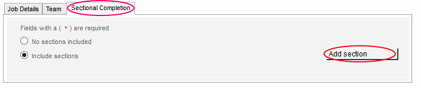
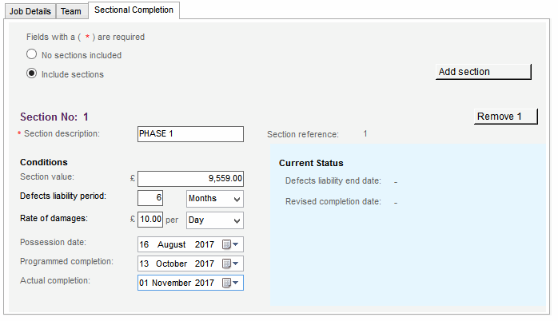

Please Note: This tab is available on Intermediate and Standard forms of contract.

To add a Section to the active job:
- Select the Sectional Completion tab - this will appear along side the Job Details and Teams tabs.
- Select the option to include sections then click on the Add section button.
- An automatically numbered section panel will appear below. Clicking the Add section button will add another below sequentially.

When a section is added, the following will appear within that section:
Section description – Insert a short description of the section.
Section reference – This section identifier is automatically generated by the software, based on which numbered section it is.
Section value – Enter the value of the work as stated in the contract documents for the section.
Defects liability period – Enter the Defects liability period for the section in Days, Months, Weeks or Years.
Rate of damages – Enter the rate of damages for the section (format being Day, Month, Week or Year) which may be levied against the contractor in the event of late completion.
Possession date – The date of possession by the contractor of the section site as stated in the contract
Programmed completion – The date stated in the contract as the date for the section work to reach practical completion.
Please Note: Do not adjust the Programmed Completion date as the job progresses.
Revised completion dates are amended automatically and displayed in the Current Status panel of the associated section.
Actual completion - The date of when practical completion is achieved.
The Current Status section of each section panel will automatically update when any relevant contract administration forms are issued.
To remove a section, simply click on the Remove <Section Number> button on the top right hand side of the section.
Please Note: Sections can not be removed once a contract administration form has been issued.
See Also:
Setting up a New Job
Job Team tab